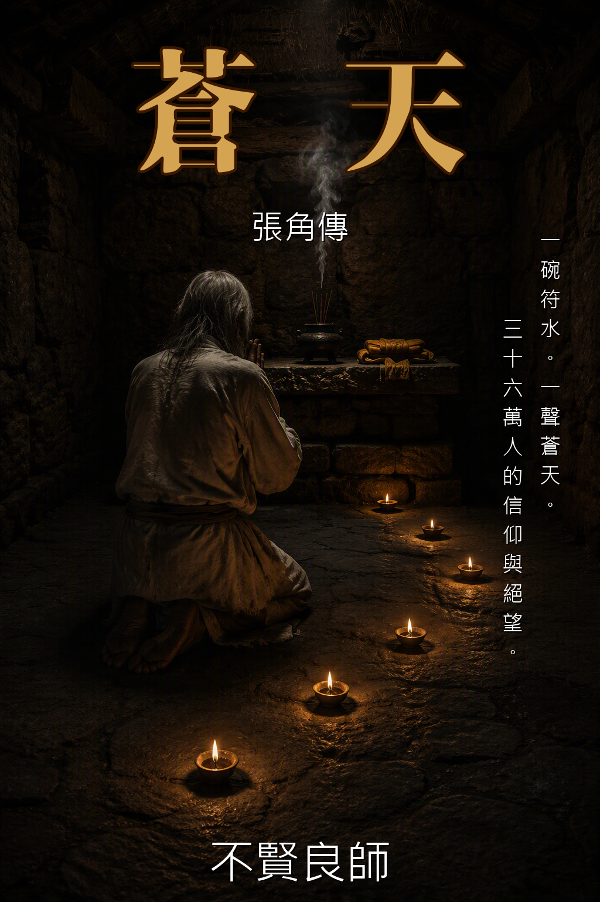

歷史人物小說——三姓家奴的另一種讀法
一個從邊疆爬上來的人，因為沒有任何「根」，所以永遠在找一個能讓他停下來的地方。但他找不到。因為他唯一的資本是武力——而武力既是他的翅膀，也是他的牢籠。
開始閱讀 →歷史人物小說——「亡命奔涿郡」那一句話裡的一千里路
一個讀書人如何被逼成殺人犯。一個殺人犯如何在逃亡中找到值得為之而死的人。從河東解池的白——到黃河的渾——到涿郡那個說了「一起」的人。
開始閱讀 →歷史人物小說——擁有一切的人如何失去一切
涼州軍閥之子。天生武勇。年少成名。帶十萬人差點殺了曹操。然後父親死了。兄弟死了。妻兒死了。涼州沒了。最後他活在別人的秩序裡，四十七歲，病死成都。臨終只求一件事：讓從弟馬岱活下去。
開始閱讀 →台灣本土 × 廟口文化 × 成長小說
一個在廟街長大的少年，他看見的世界。那個世界有鹹酥雞的油煙味、有八家將的鑼鼓聲、有機車引擎的噠噠響——也有廟公榕樹下那杯永遠倒不完的高粱酒。
開始閱讀 →原神同人 × 修仙 × 搞笑 × 遊戲穿越
一個正在打原神的玩家被遠古神器砸進蒙德大陸。神器用修仙體系教他修煉，但它的知識跟提瓦特完全對不上——甜甜花是百年人參，風車是聚靈陣，溫迪是散修。一百朵花等於一株藥。
開始閱讀 →